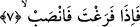

muhtemel olmaz. Söz gelimi birisi “süvarinin yanında mızrak var, gerçekten süvarinin
yanında mızrak var” dese onun bu sözü süvarinin iki mızrağı olduğu anlamına gelmez.
İşte yukardaki âyette iki kolaylık olduğu anlamı çıkmaz. Tam tersine burada
vurgulanmak istenen, mânânın pekiştirilmiş olmasıdır. Birisi çıkıp dese ki: “Bu ifâde
pekiştirme olarak yorumlandığına göre o zaman İbn Abbas (r.a.)’nın yukardaki sözünü
nasıl anlayacağız?” Buna şöyle cevap verebiliriz: Herhalde İbn Abbas “iki kolaylık”
sözüyle âyette yer alan “yüsran” kelimesinin içindeki tazimi kasdetmiş olsa gerektir.
Böylece “kolaylık” dünya ve âhiret kolaylığına şâmil olmuş olur ki bu da aslında iki
kolaylık sayılır.
Bazı âlimlerin ifâdesine göre âyetin mânâsı şudur: Mücahede zorluğunun yanında
müşâhede kolaylığı, infisal zorluğunun yanında ittisal kolaylığı, kabz zorluğu ile birlikte
bast kolaylığı vardır. Bir zorluk hicab, iki kolaylık ise keşfu’l-hicab ve ref’ul-itab’dır.
7. Boş kaldın mı hemen (başka) işe koyul
Tebliğ etmekten veya dünyevi, yararlı ve önemli işlerden “boş kaldın mı hemen
başka işe koyul.” “Başka işe koyul” şeklinde tercüme ettiğimiz kelimenin karşılığı
âyette “fensab” fiilinin kökü olan “nasab” yorgunluk, demektir. Buna göre âyet-i
kerimenin mânâsı şöyle olur; Tebliğ görevinden veya önemli dünyevi , yararlı işlerden
boş kaldın mı ibâdetle uğraş, sana vermiş olduğumuz geçmiş nimetlere ve vaad ettiğimiz
gelecek nimetlere şükür olsun diye kendini yor. Böylece âyet-i kerime yukarda geçen
âyetlerle irtibatlanmış olmaktadır.
Bu âyeti şu şekilde anlamak da mümkündür: Vahyi almaktan boş kaldın mı hemen
tebliğ ile yorul, tebliğe koyul.
Hasan (rh.) ise bu âyeti şöyle anlıyor: Sağlığın yerinde olduğunda boş vakitlerini
ibâdette yorulmakla geçir. Nitekim rivâyet edilir ki Kadı Şüreyh birbiriyle güreşmekte
olan iki kişiyle onlara boş boş bakan bir üçüncü kişiye rastlar ve sorar: Bu niye bir
şeyle meşgul olmuyor? Allah Teâlâ, Kur’an’ı Kerimde “boş kaldın mı hemen başka işe
koyul” buyuruyor. Bir kimsenin hiçbir iş yapmadan boş boş oturması veya dinini ya da
dünyasını ilgilendirmeyen bir şeyle meşgul olması onun düşünce sakatlığı içinde aklının
zayıf ve kendisini gafletin kuşatmış olduğunu gösterir.
Hz. Ömer (r.a.)’in şöyle dediği rivâyet olunur: “Ben sizlerden herhangi birinizi
dünya ve âhiret ameli ile meşgul olmaksızın bomboş bir biçimde görmekten hoşlanmam.
Kişinin mutlaka meşru bir işi olmalıdır. Bir işi bitirdi mi onun peşinden hemen başka
bir işe koyulmalıdır.”
Katade ve Dahhak bu âyet-i kerimeyi şöyle tefsir ederler: “Namazı bitirdin mi duâda
yorul.”